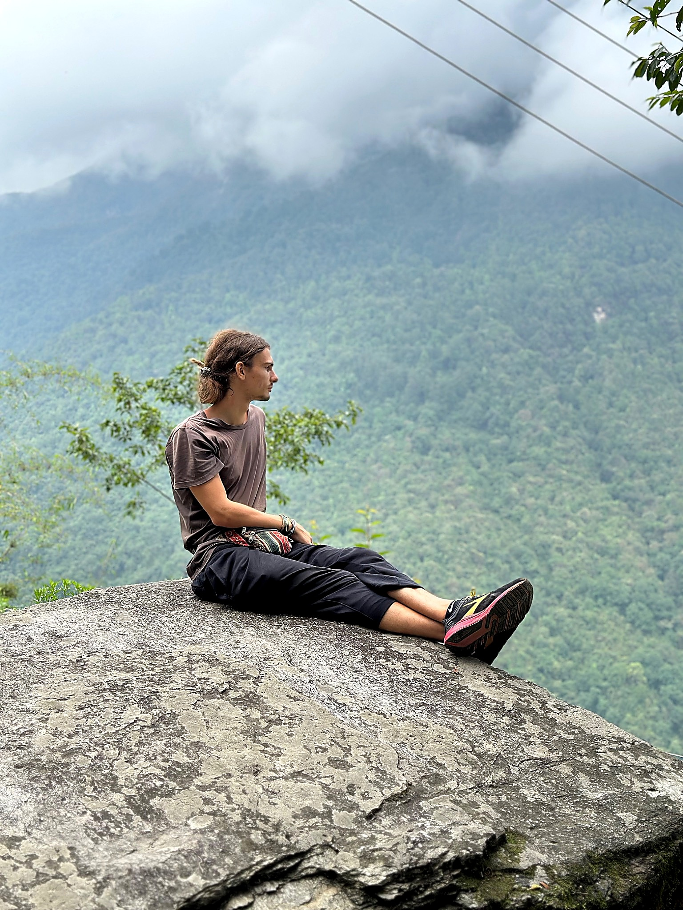

01
Unverbindliches Kennenlernen
In einem ersten Online-Gespräch von etwa 15–30 Minuten sprechen wir über deine Anliegen, Wünsche und Ziele. So lernen wir uns kennen und klären, ob die Beratung zu dir passt.
Entdecke eine Ernährung, die zu dir, deinem Alltag und deinen Werten passt – ganzheitlich, pflanzenbetont und wissenschaftlich fundiert.

Ich begleite dich dabei, deine Ernährung bewusster zu gestalten und passende Routinen zu entwickeln. Im Mittelpunkt stehst du: deine Bedürfnisse, deine Ziele und ein Weg, der langfristig zu deinem Leben passt.
Wir schauen nicht nur darauf, was auf deinem Teller liegt, sondern auf dich als ganzen Menschen. Ziel ist eine Ernährung, die deine Gesundheit unterstützt und gleichzeitig zu deinen Vorlieben, Routinen und deinem Alltag passt. Die Beratung ist in Potsdam und Berlin sowie flexibel online möglich.
Von unserem ersten Gespräch bis zur persönlichen Auswertung – Schritt für Schritt und transparent.
In einem ersten Online-Gespräch von etwa 15–30 Minuten sprechen wir über deine Anliegen, Wünsche und Ziele. So lernen wir uns kennen und klären, ob die Beratung zu dir passt.
Du dokumentierst eine Woche lang deine Mahlzeiten und Getränke. In derselben Woche empfehle ich dir, beim Hausarzt oder bei der Hausärztin eine Blutuntersuchung durchführen zu lassen. So können Ernährung und Blutwerte zeitlich zusammen betrachtet werden.
Im Anschluss werte ich dein Ernährungsprotokoll und die ärztlich erhobenen Blutwerte gemeinsam aus. Beide Ergebnisse fließen in deine persönliche PDF-Auswertung ein. Die Auswertung ersetzt keine ärztliche Diagnostik oder Behandlung.
Du erhältst eine individuelle PDF-Auswertung mit konkreten Empfehlungen und alltagstauglichen Impulsen – abgestimmt auf deine Ernährung, Bedürfnisse und bisherigen Gewohnheiten.
In einem abschließenden Online-Gespräch von etwa 30 Minuten besprechen wir deine Auswertung, beantworten offene Fragen und schauen gemeinsam, wie du die Empfehlungen realistisch in deinen Alltag integrieren kannst.
Auch über die Ernährungsberatung hinaus kannst du dich bei weiteren Fragen per E-Mail an mich wenden. Ich bleibe gerne dein Ansprechpartner, wenn nach der Auswertung noch etwas offen ist.
Die Beratung kann verschiedene Bereiche verbinden – orientiert an deinen persönlichen Fragen und Zielen.
Individuelle Gespräche zu Essgewohnheiten, Lebensstil und persönlichen Zielen – wertschätzend und ohne starre Regeln.
Alltagstaugliche Orientierung und passende Ideen, abgestimmt auf deine Vorlieben, Bedürfnisse und deinen Tagesablauf.
Wissen und praktische Tipps für eine ausgewogene vegane oder pflanzenbetonte Ernährung.
Impulse zu Essverhalten, Alltag, Achtsamkeit und Gewohnheiten, die dein Wohlbefinden unterstützen können.
Verständliche Einordnung aktueller Erkenntnisse rund um Ernährung, Gesundheit und Nachhaltigkeit.
Deine Ernährung soll zu deinem Leben passen – nicht umgekehrt. Deshalb berücksichtige ich deine persönlichen Vorlieben und bestehenden Routinen. Es geht um sinnvolle, nachhaltige Anpassungen und nicht darum, deine gewohnten Essgewohnheiten vollständig über Bord zu werfen.
„Es geht nicht um Perfektion, sondern darum, jeden Tag Entscheidungen zu treffen, die uns guttun.“Daniel Suckrow
Entdecke das Longevity-Protokoll, interaktive Rechner, Challenges und die Quizwelt.
Ein strukturierter Überblick über Routinen, Ernährung, Regeneration und Gesundheitsmonitoring.
Protokoll ansehen · 1,00 € →Lege dein monatliches Budget fest und erhalte eine transparente, priorisierte Beispielauswahl.
Rechner öffnen →Ein klarer Ablauf mit Ernährungsprotokoll, Blutwerten, persönlicher PDF und Abschlussgespräch.
Beratung für 50 € ansehen →Kleine, motivierende Herausforderungen helfen dir, neue Gewohnheiten auszuprobieren und mehr Gesundheit in deinen Alltag zu integrieren.
Challenges entdecken →Fünf Quizze mit jeweils zehn Fragen zu Gesundheit, Supplementen, Antioxidantien, Langlebigkeit und pflanzlicher Ernährung.
Quiz auswählen →Finde deine geschätzten Pulsbereiche und erfahre, was die vier Trainingszonen bedeuten.
Zonen berechnen →Eine Auswahl meiner bisherigen Artikel zu Ernährung, pflanzlicher Lebensweise, Gesundheit und Ethik.
Sieben Impulse, um die Sinne zu öffnen, zur Ruhe zu kommen und die Natur bewusster zu erleben.
Beitrag lesen ↗Was E-Nummern bedeuten, wie Zusatzstoffe bewertet werden und wie Apps wie Yuka einzuordnen sind.
Beitrag lesen ↗Wie Stress entsteht, welche Funktion er hat und welche Strategien im Alltag helfen können.
Beitrag lesen ↗Warum Detox-Kuren nicht nötig sind und was Verdauung und Darmmikrobiom tatsächlich unterstützt.
Beitrag lesen ↗Wie du im Alltag innehalten, deine Aufmerksamkeit schulen und achtsamer leben kannst.
Beitrag lesen ↗Was Antioxidantien leisten und warum Vielfalt wichtiger ist als ORAC-Werte.
Beitrag lesen ↗Warum beide Fettsäuren wichtig sind und weshalb das Verhältnis allein nicht entscheidend ist.
Beitrag lesen ↗Welche Nährstoffe besondere Aufmerksamkeit verdienen und wie eine bedarfsgerechte Versorgung gelingt.
Beitrag lesen ↗Wie Medikamente die Gefäßneubildung hemmen – und was über Lebensmittel wirklich bekannt ist.
Beitrag lesen ↗Wie Ballaststoffe Verdauung und Darmmikrobiom unterstützen und wie du 30 Gramm täglich erreichst.
Beitrag lesen ↗Was Karottensaft auszeichnet und worauf es bei der Zubereitung ankommt.
Beitrag lesen ↗Aufklärung und Empfehlungen zur Vitamin-B12-Versorgung.
Beitrag lesen ↗Über Empfindungsfähigkeit, Ungleichbehandlung und Ernährungsgerechtigkeit.
Beitrag lesen ↗Ein Blick auf bioaktive Verbindungen und ihre Bedeutung bei veganer Ernährung.
Beitrag lesen ↗Was diese Strukturen sind und welche Rolle sie für unsere Zellen spielen.
Beitrag lesen ↗Ein Beitrag über ausgewählte Supplemente und ihre mögliche Bedeutung.
Beitrag lesen ↗Praktische Ideen, um den Salzkonsum zu reduzieren und Geschmack zu bewahren.
Beitrag lesen ↗Welche Arten es gibt und wie Ballaststoffe den Körper unterstützen.
Beitrag lesen ↗Einordnung eines Forschungsansatzes an der Schnittstelle von Ernährung und Krebs.
Beitrag lesen ↗Worauf bei einer gut geplanten pflanzlichen Ernährung zu achten ist.
Beitrag lesen ↗Grundlagen zu Fettsäuren und ihrer Bedeutung in der Ernährung.
Beitrag lesen ↗Du möchtest deine Ernährung verändern oder Themen wie Stress und Bewegung bzw. Sport einbeziehen? Je nach Bedarf berücksichtigen wir auch diese Bereiche in deiner Beratung. Schreib mir – ich freue mich darauf, von dir zu hören.
Potsdam · Berlin · Online
Persönliche und digitale Ernährungsberatung